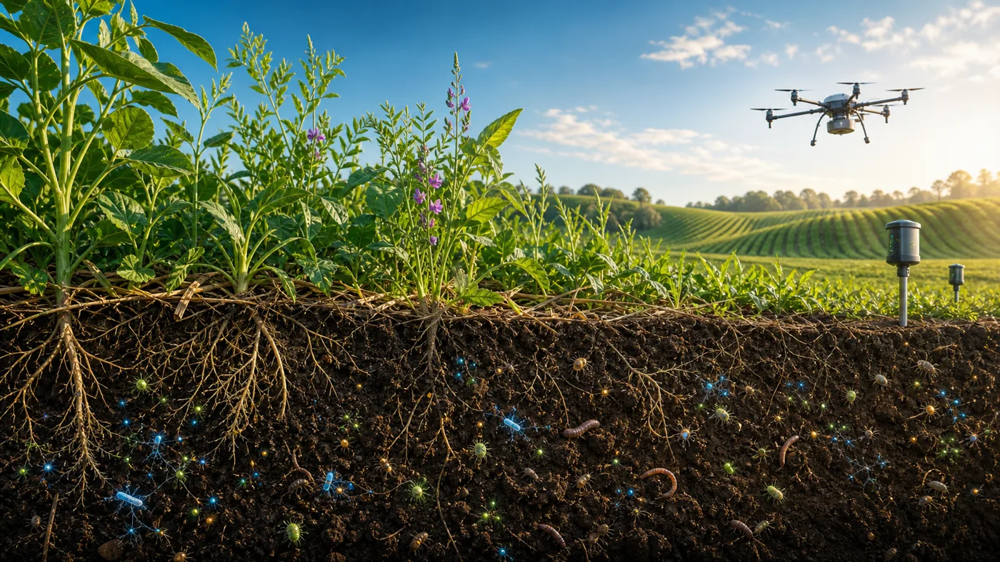

Primeira resposta
Cobertura viva
Palhada e plantas de cobertura protegem a superfície, alimentam microrganismos e deixam a chuva infiltrar melhor.
Central subterrânea • Agrinho 2026
O RaizLab transforma biodiversidade, sensores e manejo em uma sala de controle do campo: escolha um risco, veja o núcleo reagir e monte uma resposta sustentável.

Plano de recuperação
Cada prática mexe em fertilidade, proteção e economia. A proposta é unir técnica rural com leitura de dados, como um agricultor que conversa com a própria terra.
Primeira resposta
Palhada e plantas de cobertura protegem a superfície, alimentam microrganismos e deixam a chuva infiltrar melhor.
Mapa de talhões
Desafio final